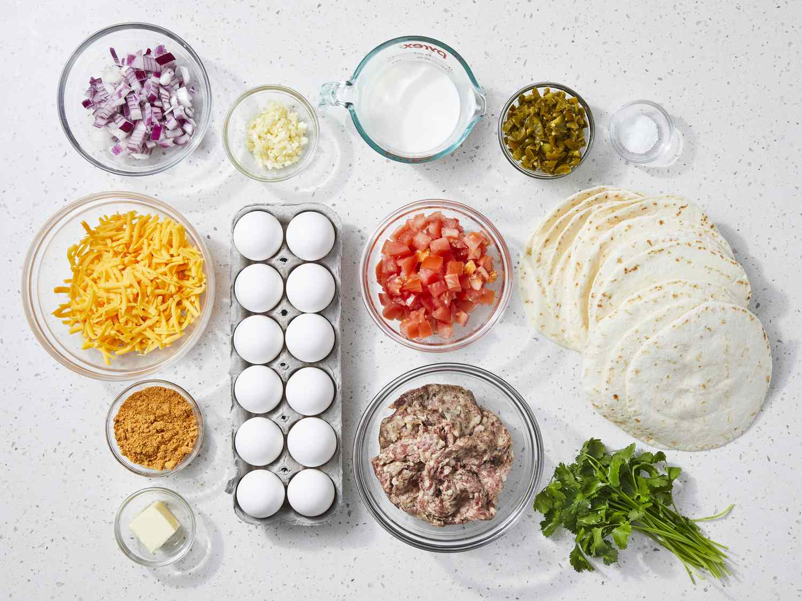
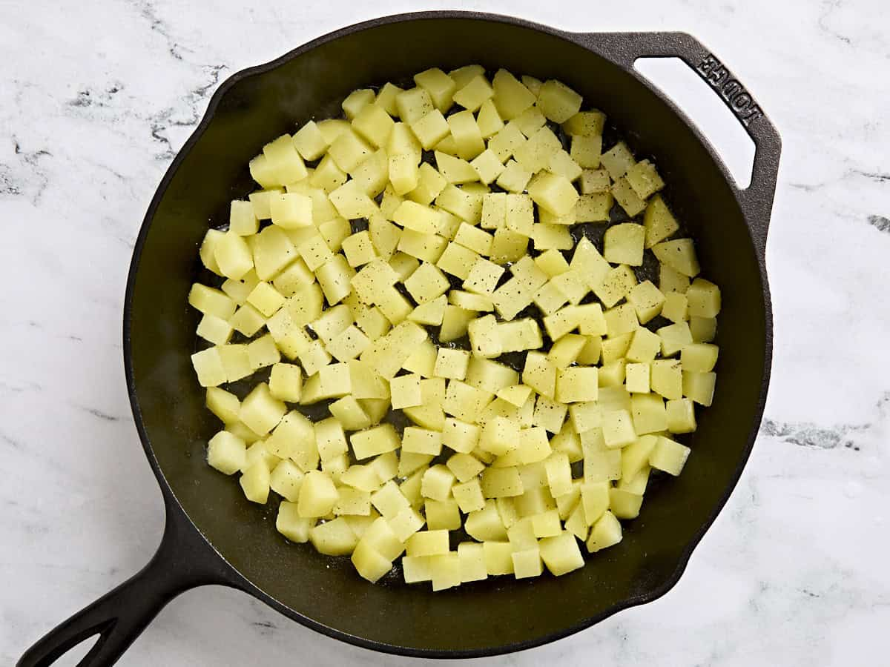
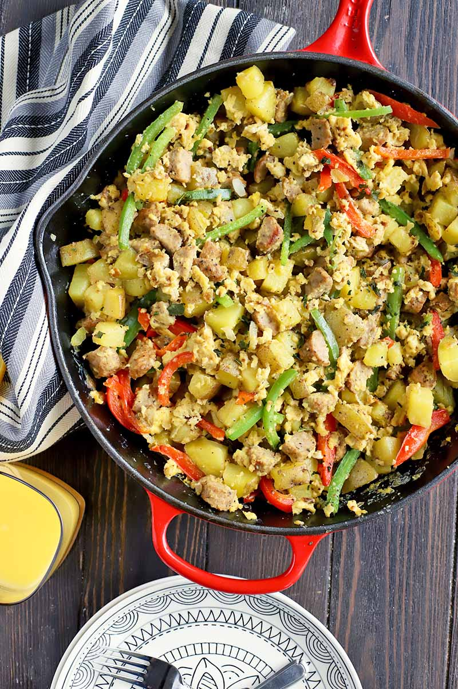
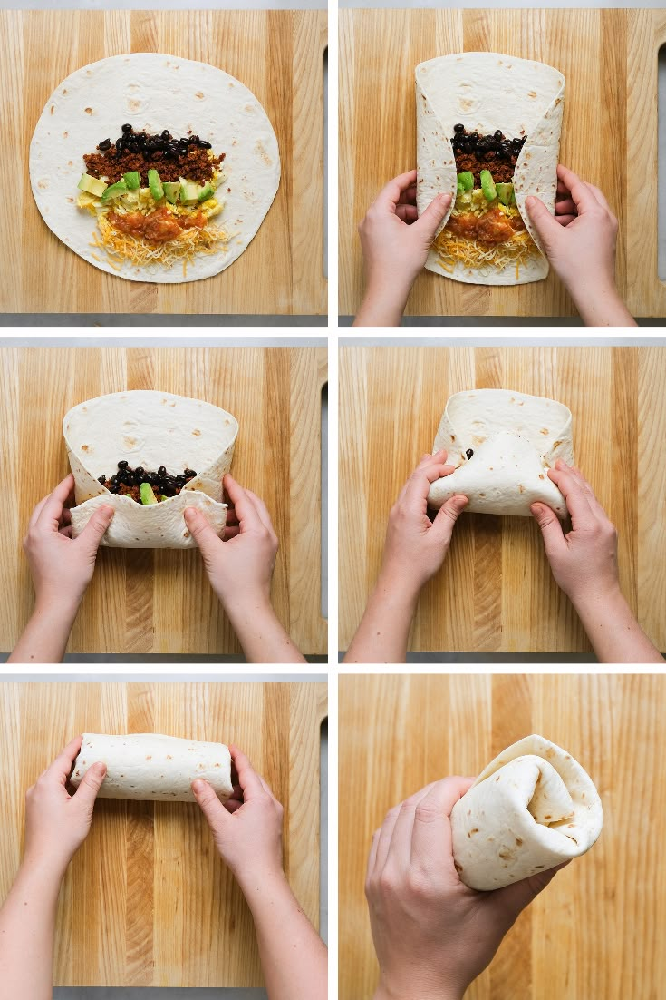

A hearty, filling burrito packed with scrambled eggs, crispy potatoes, savory sausage, and melted cheese — perfect for starting your morning right.
⏱
15 minutes
🍳
20 minutes
🌯
4 burritos

The finished breakfast burrito, ready to serve.

All the ingredients laid out and ready to go.
Heat 1 tablespoon of olive oil in a large skillet over medium-high heat. Add the diced potatoes in a single layer and season with garlic powder, smoked paprika, salt, and pepper. Cook for 10–12 minutes, stirring occasionally, until golden brown and crispy on the outside and soft inside. Remove and set aside.

Crispy diced potatoes cooking in the skillet.
In the same skillet, add the breakfast sausage over medium heat. Break it into crumbles with a spatula and cook for 5–7 minutes until fully browned and cooked through. If using links, slice them into rounds after cooking. Drain excess grease if needed, then push the sausage to the side of the pan.
Add a little more oil to the skillet if needed. Toss in the diced onion and bell pepper. Cook for 3–4 minutes until softened and slightly caramelized. Season lightly with salt and pepper, then mix together with the sausage.
Whisk together the eggs and milk with a pinch of salt and pepper. Reduce heat to medium-low. Pour the egg mixture into the skillet over the sausage and vegetables. Gently stir and fold the eggs as they cook, about 2–3 minutes, until just set but still slightly soft. Remove from heat — they will finish from residual heat.

Scrambled eggs folding together with sausage and peppers.
Warm each flour tortilla for about 20–30 seconds per side in a dry skillet, or wrap the stack in a damp paper towel and microwave for 30 seconds. Warm tortillas are much more flexible and fold without tearing.
Lay a warm tortilla flat. Sprinkle shredded cheddar in the center. Spoon on a heaping portion of the egg and sausage mixture, then add a scoop of crispy potatoes on top. Add salsa, sour cream, hot sauce, or cilantro as desired. Fold the sides inward, then roll from the bottom up, tucking firmly as you go.

Loading up the tortilla before folding.
For a crispy exterior, place the wrapped burrito seam-side down in the skillet over medium heat for 1–2 minutes per side until lightly golden and sealed shut. This step is optional but highly recommended!
Skip the sausage and add black beans, sautéed mushrooms, or extra veggies like zucchini and corn.
Wrap individual burritos in foil. Refrigerate up to 4 days or freeze up to 3 months. Reheat in the oven at 350°F for 20 minutes.
Add diced jalapeños, pepper jack cheese, or a spoonful of chipotle in adobo to the egg mixture for extra heat.
This recipe gallery was made possible by Pinterest, Google Images, and my computer science class, for providing images and teaching me how to code HTML.